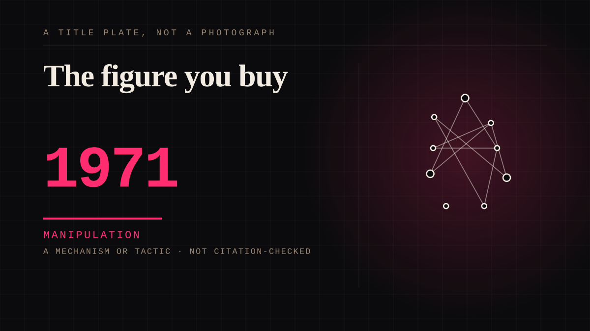

A mechanism or tactic · 1971 · Marketing
The figure you buy
A fictional figure whose NAME is the product: the bond is with a person who was invented so that the relationship can never fail.

The inverse of the-brand-as-character, and the sharper version of it. There the company came first and was given a personality; here the personality came first and the company took the name. In 1971 a breakfast-cereal company with no film experience paid roughly $3m to finance an adaptation in exchange for the right to sell a bar under the character's name, and the film was retitled to put the product in the title. Wikipedia calls it the greatest reverse product placement ever. The point of the arrangement is not the pun: it is that the far side of the bond is manufactured to be unfalsifiable. A performer can cancel, die, scandalise or sue you. This one cannot do any of it, because he was never a person, and a bond that cannot be disappointed cannot repay either. That is why it lasts fifty-five years. The 2026 Netflix competition is where the engineering fails in public: it restores Gene Wilder's dead voice with generative audio, built by ElevenLabs with the approval of his estate and his widow, and the showrunner says the only person who could be Wonka is Gene Wilder - fusing a fictional chocolatier and a dead actor into one addressable figure. It was hated. Metacritic 29, no positive reviews, and the Los Angeles Times on the voice: lifeless, not so much from beyond the grave as buried in it. The bar works because the mask never slips; the show fails because it made the mask visible. The two things are the same mechanism. Two harder facts. The book rewards Charlie for refusing to be greedy; the show pays three million dollars to contestants who are incentivised to scheme and calls its eliminations termination, so the figure is made to host the contest he was invented to punish. And the name has been owned by a Swiss conglomerate and an Italian confectioner in turn, and now sits inside a streaming platform that bought the Dahl catalogue outright - one invented figure, four successive owners, none of whom have met. The transparency problem is also here, in its most literal form: the invented name is the standing emblem for a real and well-documented cocoa supply chain, and it absorbs the charge. That last point is recorded as an allegation where it is one, and it is here for its structure rather than as an accusation.
Manipulation. One-sided attachment engineered for somebody else's benefit. Paid intimacy, parasocial persuasion, sasaeng, grief extraction, the streak. The lane that pays the bills and the lane that causes the most harm, frequently at the same time.
Application. One-sided attachment put to work on purpose. Creator economies, community, fandom as infrastructure, and the things that genuinely help people. Not automatically good - a tool with an obvious use is a tool that will also get a bad one.
Where it sits
1950 1950-1999 · 1971 1999
Provenance · 9 source record(s)
- retrievableThe mechanism's whole shape in one record: Dahl licensed the Wonka name to the director, the producer David L. Wolper convinced Quaker Oats - a porridge company with no film experience - to advance $3 million for the right to sell a Wonka bar, and the film was retitled for promotional purposes. Brand launched 17 May 1971, a month before the film opened on 30 June 1971. Ownership ran Quaker -> Sunmark -> Rowntree Mackintosh (1986) -> Nestle (1988) -> renamed Nestle Candy Shop in 2015, the Wonka name dropped -> sold to Ferrero 2018.Wikipedia, The Willy Wonka Candy Company ↗
- retrievableThat the fictional chocolatier was made the mascot of a real confectionery brand, that real Everlasting Gobstoppers and Wonka Bars were produced, and the franchise's cast across 1971, 2005 and 2023.Wikipedia, Willy Wonka ↗
- retrievableThe unfalsifiable figure in a press release. A GBP 3.6m media campaign in which the quoted speaker is 'Mr Willy Wonka' - 'I am sure the public will love our scrumdiddlyumptious new chocolate bars' - and a Nestle spokesperson adding 'Willy Wonka is one of the nation's best known characters and we wanted to do him proud.' Consumer testing found 80 per cent would probably or definitely buy against a 60 per cent product norm. There is no endorser because there is no person: the character issues the quote.Nestle UK & Ireland press release, 'Nestle Confectionery to bring the World of Wonder back to chocolate with Wonka' ↗
- retrievableThe recursion: 12 golden-ticket winners and a partner each step through the factory gates, one series, and the series features the re-created voice of Gene Wilder as Willy Wonka with the consent of his estate.Netflix Tudum, 'Wonka's The Golden Ticket: Release Date' ↗
- retrievableThe two facts that make the entry. First, the moral is inverted: Dahl's Charlie is rewarded for humility and an absence of greed, while Netflix's series 'incentivizes contestants to scheme and strategize to win a $3 million prize'. Second, the production reasoning for the dead voice - Holloway: 'What would Wonka do at this point? What would Wonka say? I.e. What would Gene Wilder say?' - and that it was done with explicit approval and encouragement from his estate and wife, using ElevenLabs. Also that contestants qualified by finding a ticket hidden inside a Wonka chocolate bar, so the purchase is the entry token.NBC News, 'Netflix turns Willy Wonka's chocolate factory into a real-life social experiment' ↗
- retrievableThe reception that makes the mechanism legible. 'A lifeless voice not so much from beyond the grave as buried in it.' The critic also notes the show is a re-dressed Survivor and that the 1971 film, not a success in its own time, is what lodged in several generations' childhood memories.Los Angeles Times, Robert Lloyd, 'Wonka's the Golden Ticket review: Gene Wilder's AI voice is lifeless' ↗
- retrievable29 from 7 critic reviews, 0 per cent positive. The audience verdict on an unfalsifiable figure when the substitution was made audible.Metacritic, 'Wonka's The Golden Ticket' ↗
- retrievableThe supply chain the invented name is made to stand for. More than 2m children in cocoa-growing regions per a 2015 US Labor Department report; industry deadlines in 2005, 2008, 2010 and 2015 all missed; and executives at Hershey, Mars and Nestle could not guarantee their chocolate was made without child labour - one said 'I'm not going to make those claims.' Nestle owned the Wonka brand from 1988 to 2015.Washington Post, 'Hershey, Nestle and Mars broke their pledges to end child labor in chocolate production' ↗
- retrievableRECORDED AS AN ALLEGATION. Eight Malian plaintiffs, trafficked as children to harvest cocoa in Cote d'Ivoire, sued Nestle, Cargill, Hershey, Mars, Mondelez, Barry Callebaut and Olam. Nestle owned the Wonka brand through most of that period. The companies dispute the claims and say there is no legal basis; nothing here asserts otherwise, and it is in the entry for its structure - an invented name used as the emblem for real people - rather than as an accusation about any one firm.Business & Human Rights Centre / International Rights Advocates, press release of 12 February 2021 ↗
Connected · 5 out, 1 in
It sits in